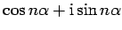

Inhalt Index DeskTop Bronstein

 Funktionen und ihre Darstellung Trigonometrische Funktionen (Winkelfunktionen) Wichtige Formeln für trigonometrische Funktionen
Funktionen und ihre Darstellung Trigonometrische Funktionen (Winkelfunktionen) Wichtige Formeln für trigonometrische Funktionen


Für große Werte von n ermittelt man mit der Formel von MOIVRE  und
und  .
.
Unter Benutzung der Binomialkoeffizienten ergibt sich:
|  | = | ||
| = | |||
| (2.99) |
woraus folgt
| = | (2.101) |